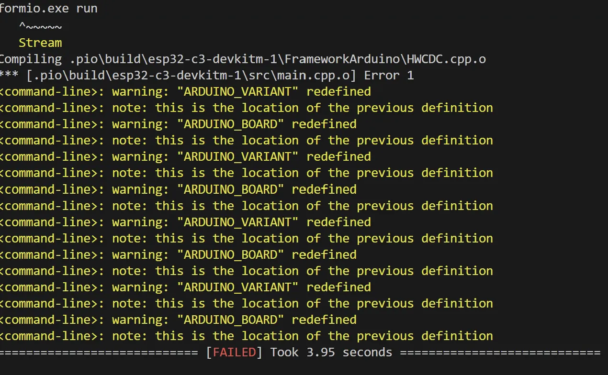
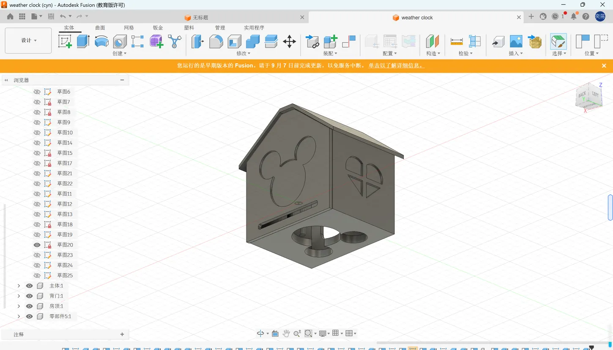
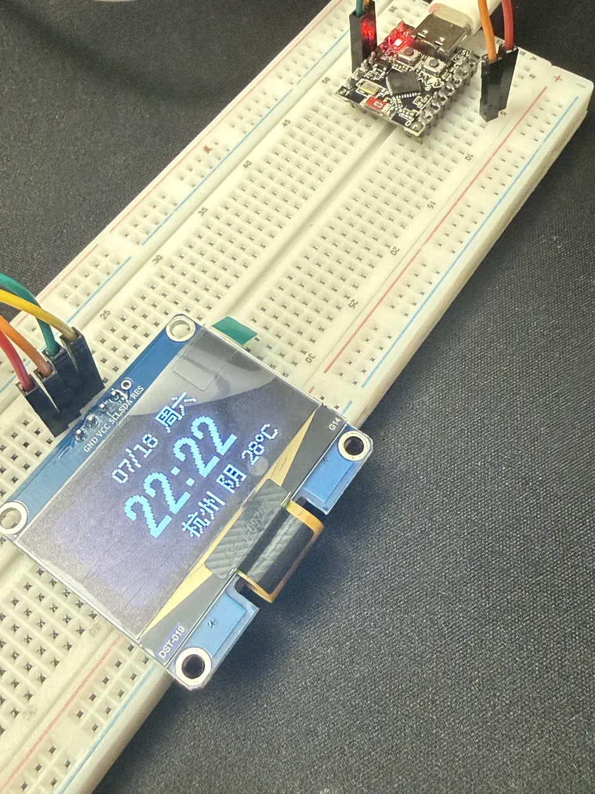
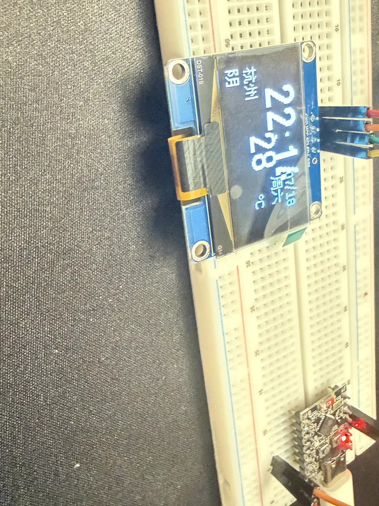
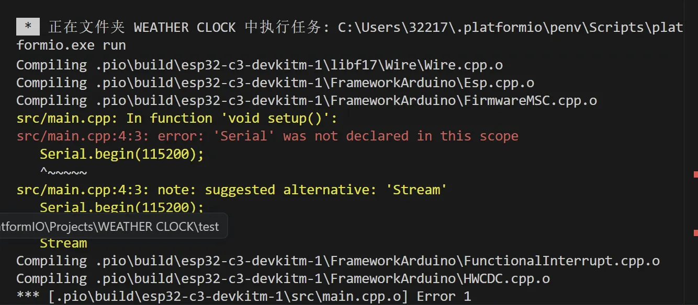
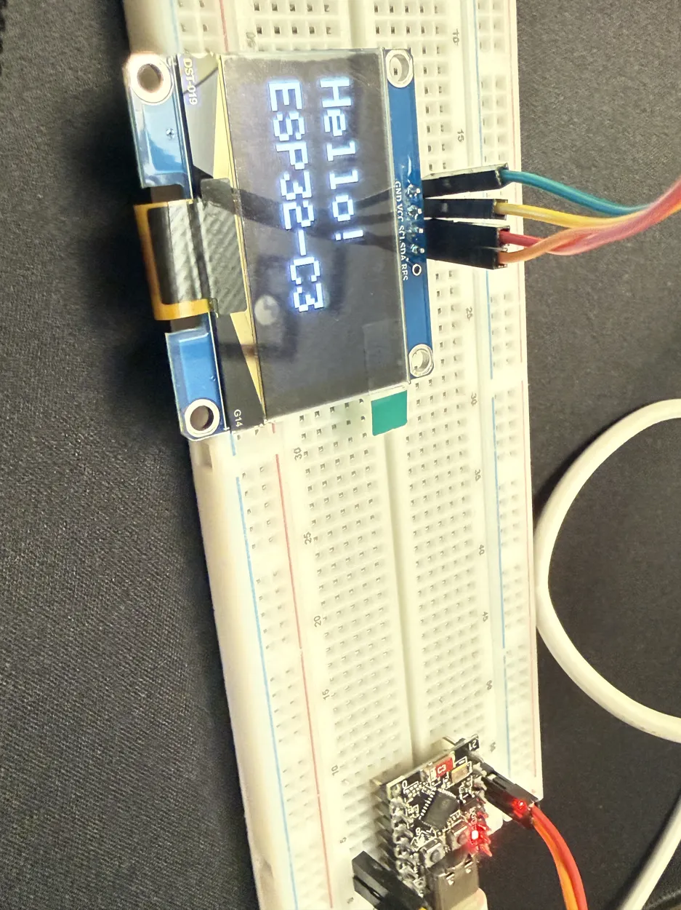
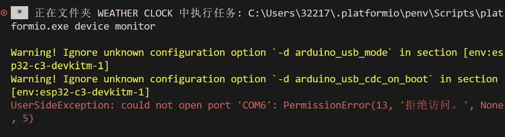

返回硬件项目索引
返回硬件项目索引智能天气时钟
阅读项目文档 ↓本项目是一款基于 ESP32-C3 的桌面智能天气时钟，集时间显示、天气预报、本地 RTC 走时、按键交互与趣味表情于一体。设备通过 Wi-Fi 联网获取精确时间和实时天气，同时板载 DS3231 高精度 RTC 模块，即使断网或断电，时间依然准确走时。OLED 屏幕常亮显示当前时间、日期、城市、天气状况与温度；用户可通过两个实体按键轻松切换页面，查看未来两天预报、风力风向等详细信息，还能进入图片模式，与可爱的小动画互动。










项目文档
暑期项目介绍
暑期项目介绍
项目概况
项目名称：智能天气时钟
mentor：骆佳静
项目简介
本项目是一款基于 ESP32-C3 的桌面智能天气时钟，集时间显示、天气预报、本地 RTC 走时、按键交互与趣味表情于一体。设备通过 Wi-Fi 联网获取精确时间和实时天气，同时板载 DS3231 高精度 RTC 模块，即使断网或断电，时间依然准确走时。OLED 屏幕常亮显示当前时间、日期、城市、天气状况与温度；用户可通过两个实体按键轻松切换页面，查看未来两天预报、风力风向等详细信息，还能进入图片模式，与可爱的小动画互动。
核心功能
- 时间显示：NTP 网络授时 + DS3231 本地 RTC 双保障，断网也能精准走时。
- 天气信息：实时获取温度、天气状况、湿度；支持查看未来两天预报、最高/最低温、风力风向。
- 按键交互：两个物理按键，一键循环切换主页、天气详情、未来两天预报。
- 趣味图片：内置笑脸、小花、猫咪三帧简笔画，按键切换，为桌面增添生机。
设计亮点
- 双时间源：NTP 定期校准 RTC，断网自动切换本地走时，时间永不丢失。
- 低成本的桌面伴侣：只需一块 ESP32-C3、OLED 屏、DS3231 和两个按键，即可实现功能完整的智能时钟。
- 可扩展：预留电池接口，可外接锂电池实现便携供电；PCB 已设计 Type-C 与电源管理电路。
---
项目成长
嵌入式代码
本项目嵌入式代码基于 ESP32-C3 与 Arduino 框架，采用模块化设计，主要文件为 main.cpp 和 secrets.h。
核心模块包括：系统初始化、Wi-Fi 连接、时间管理（NTP 网络授时 + DS3231 本地 RTC）、天气数据获取（心知天气 API 与 JSON 解析）、OLED 多页面显示（U8g2 驱动 SSD1309，支持倒置）、双按键交互、趣味图片绘制及辅助函数。
启动时初始化外设、RTC 与 OLED，连接 Wi-Fi 后自动用 NTP 校准 RTC 并获取天气；若联网失败则使用 RTC 时间离线运行。
主循环中持续扫描按键实现页面切换与图片模式，每秒刷新时间显示，每 30 分钟刷新天气并同步 RTC。代码具备容错设计：断网时依靠 RTC 走时，API 失败保留上次数据，按键消抖防止误触。整体结构清晰，各模块协同工作，便于扩展与维护。
电路原理图
本项目原理图基于ESP32-C3 设计，包含主控、USB供电、OLED显示、按键、蜂鸣器及I2C扩展六个模块。主控采用ESP32-C3-MINI-1，负责整体控制与外设协调；Type-C接口仅用于5V供电，CC1/CC2通过5.1kΩ下拉，符合USB-C规范；OLED与I2C扩展共用I2C总线（GPIO8/9）；按键带10kΩ上拉和1kΩ限流电阻；蜂鸣器由S8050三极管驱动，并配有续流保护。
机械结构
第一版打印模型没有考虑到PCB板的尺寸，导致无法正常放入PCB 板；第二版修改尺寸后顺利完成。
调试与迭代过程
AI使用说明
在本项目的开发过程中，我使用了DeepSeek、ChatGPT等作为技术咨询与代码调试的辅助手段
使用范围：
1. 代码编写与调试：在ESP32-C3的程序开发中，借助AI生成部分基础代码框架（如Wi-Fi连接、NTP授时、JSON解析、U8g2显示等），并就编译错误、I2C通信异常等问题向AI咨询排查思路。
2. 硬件设计咨询：在原理图设计、PCB布局、电池供电方案等方面，参考了AI给出的建议与注意事项。
所有AI生成的内容均经过我的理解、判断、验证与修改。代码在烧录后经过实际运行测试，硬件电路由我自行搭建、焊接与调试。